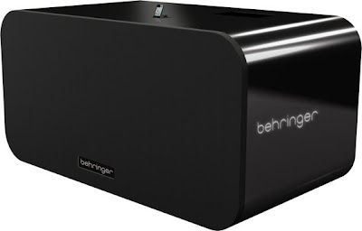

10,000 Watts
2011-12-21

This is hilarious:Behringer, a maker of professional audio and music equipment, is launching the world's loudest -- and largest -- iPhone dock. The iNuke Boom is 4 feet tall, 8 feet wide, weighs 700 pounds, and costs $29,999.
The photo reminds me of Phil Hartmann perched atop 2.5 million bowls of oat bran at the end of the classic Super Colon Blow commercial.
via MacRumors.
Labels: Tech